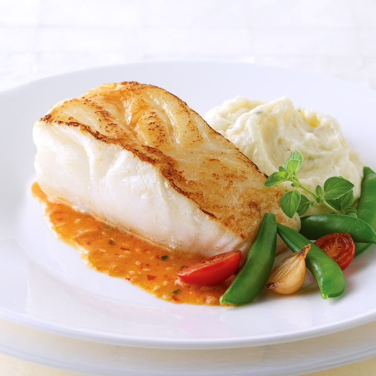
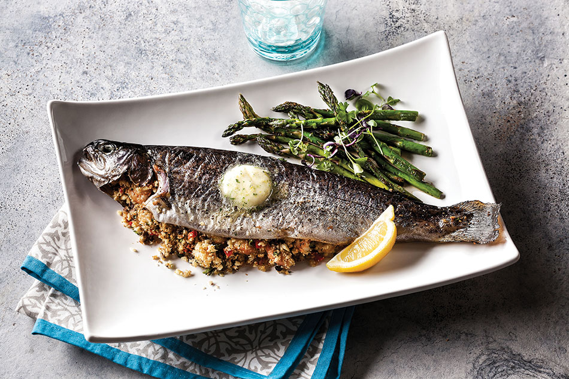
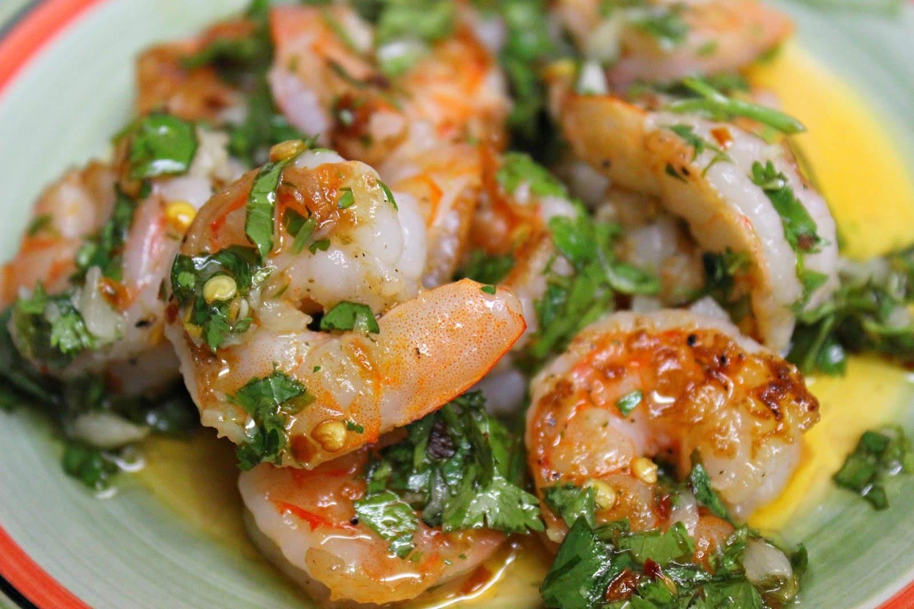
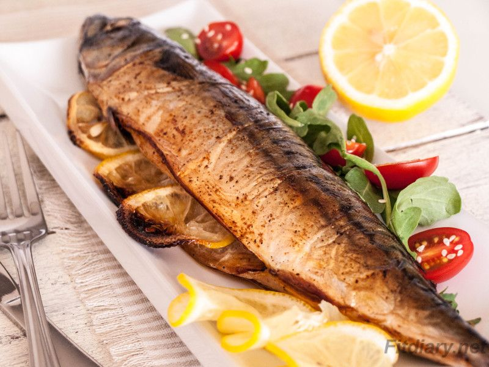
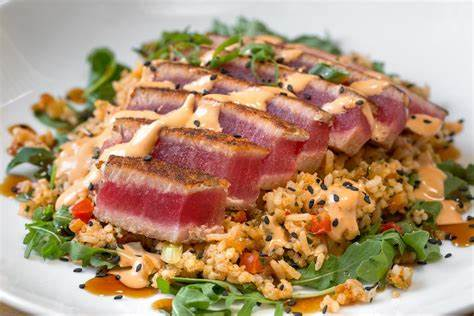
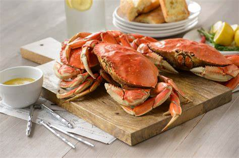
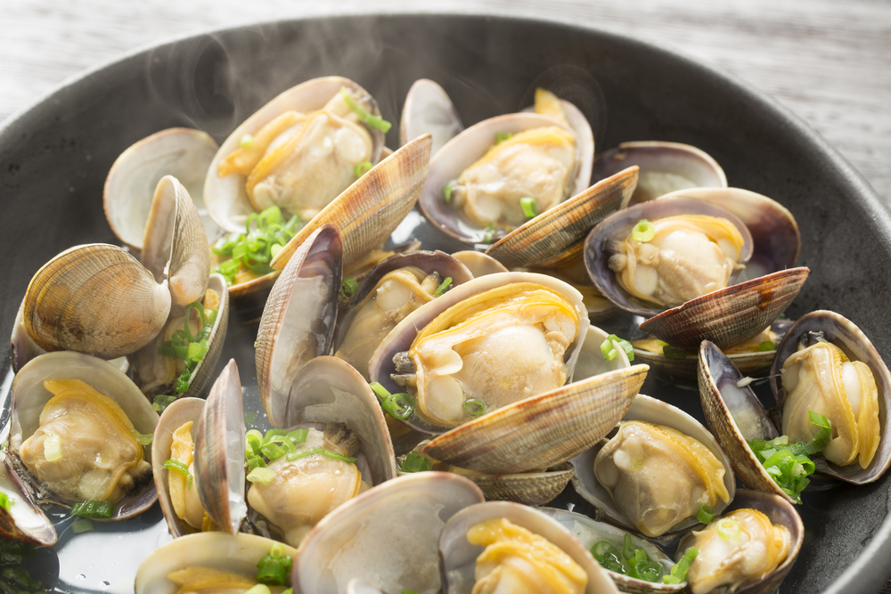
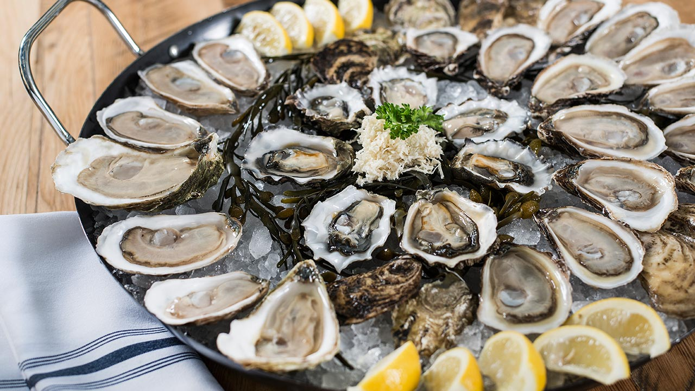

Bass
4.1
Protein rich Sea_Food ...
25 min

Rainbow Traut
4.1
Vitamin B12, Potassium...
31 min

Shrimp
3.2
Protein, Cholestrol ...
30 min

Mackerel
3.8
Fats, Potassium ...
35 min

Tuna
4.0
Protein, Vitamin B3 ...
26 min

Crab
3.6
Copper, Sodium ...
31 min

Clam
4.4
Potassium, Ash ...
29 min

Oyster
3.8
Iron, Zinc ...
35 min